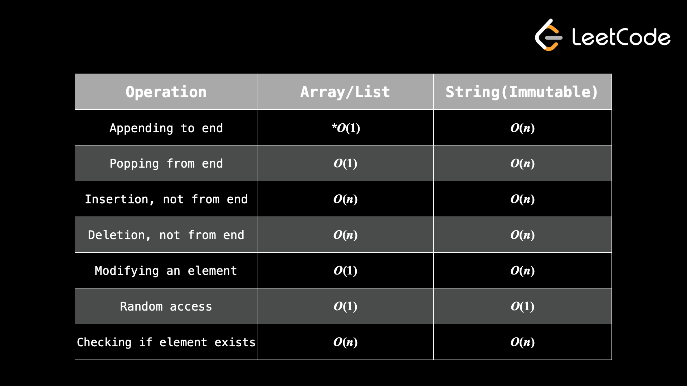

С точки зрения алгоритмических задач массивы (1D) и строки очень похожи: они оба представляют собой упорядоченную группу элементов. Большинство алгоритмических задач включают в себя либо массив, либо строку как часть входных данных, поэтому важно хорошо освоить основные операции и изучить наиболее распространенные шаблоны.
«Массив» может означать что-то разное в разных языках. Например, Python в основном использует «списки» вместо массивов, что очень мягко. Инициализация выполняется так же просто, как arr = [], и вам не нужно беспокоиться о типе данных, которые вы храните в списке, или о размере списка. Другие языки, такие как C++, требуют указания размера и типа данных массива во время инициализации, но также поддерживают списки (например, std::vector в C++).
Технически размер массива изменить нельзя. А динамического массива, по-другому списка, можно. В контексте проблем алгоритмов, когда люди обычно говорят о массивах, они имеют в виду динамические массивы. На протяжении всего курса мы будем говорить о динамических массивах/списках, но будем использовать просто слово «массив».
Аналогично, строки реализуются по-разному в разных языках. В Python и Java они неизменяемы. В C++ они изменяемы. Важно знать детали массивов и строк языка, который вы планируете использовать на собеседованиях. У нас нет времени рассматривать все различные реализации для каждого языка, поэтому, пожалуйста, изучите их для выбранного вами языка, если вы еще не знакомы.
Изменяемый: тип данных, который можно изменить. Неизменяемый: тип данных, который нельзя изменить. Если вы хотите изменить что-то неизменяемое, вам придется воссоздать все это целиком.
Почему нас должно волновать, что что-то изменчиво или неизменно? Если у вас есть изменяемый массив arr = ["a", "b", "c"] и неизменяемая строка s = "abc", но вы хотите вместо этого сделать "abd", вы можете легко сделать arr[2] = "d", но вы не можете сделать s[2] = "d". Таким образом, если вам нужна строка s = «abd», вам придется создать ее полностью с нуля. С такой маленькой строкой это не имеет большого значения. Но иногда вы имеете дело со строками длиной 100 000 символов, поэтому создавать новые версии только для изменения одного символа очень дорого (O(n), где n — размер строки).
Как упоминалось ранее, большинство алгоритмических задач связаны с массивом или строкой. Это чрезвычайно универсальные структуры данных, и невозможно перечислить все соответствующие методы решения проблем в одной статье. В следующих нескольких статьях мы рассмотрим наиболее распространенные методы. Но сначала давайте кратко рассмотрим сложность операций с массивами и строками.

Добавление в конец списка исполняется за O(1).